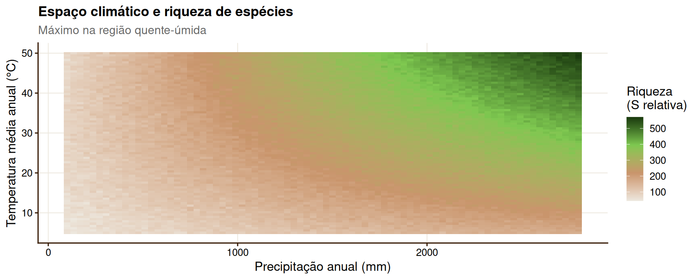

Clima, Solo e Vegetação
Determinantes abióticos da diversidade e biogeografia
maio de 2026
Gradientes Edáficos e Beta-Diversidade no Cerrado
O Cerrado é o bioma onde a relação solo × vegetação × diversidade é mais evidente no Brasil:
 fonte: Embrapa
fonte: Embrapa
Dica
Beta-diversidade edáfica: a transição de campo limpo distrófico para mata de galeria eutrófica gera alta β via turnover — comunidades co-ocorrem no espaço, mas são edaficamente segregadas.
Solos Especiais e Endemismo
Alguns tipos de solo criam “ilhas pedológicas” com flora altamente endêmica:


Formação do Solo, Clima e Vegetação: O Triângulo Pedológico

Retroalimentações:
- Plantas acidificam o solo via exsudatos de ácidos orgânicos
- Vegetação densa aumenta matéria orgânica → muda textura e CTC
- Solo define qual vegetação se estabelece → vegetação altera o solo
- Clima controla as taxas de intemperismo e acúmulo de M.O.
Nota
Em escalas de tempo geológicas, o clima “cria” o solo por meio do intemperismo. Em escalas ecológicas, a vegetação e o solo interagem continuamente.
Ecótonos: Zonas de alta Beta-Diversidade
Por que ecótonos são biodiversos?
- Contêm espécies de ambos os biomas adjacentes
- Possuem espécies especialistas de borda (dependentes da transição)
- Alta heterogeneidade microambiental em curta distância
- Alta beta-diversidade mesmo em escalas locais

Regiões Biogeográficas do Brasil

Relevância para diversidade:
A alta β-diversidade entre províncias brasileiras reflete história biogeográfica distinta:
- Amazônia e Mata Atlântica foram conectadas por corredores florestais no Pleistoceno → espécies irmãs vicariantes
- Caatinga e Cerrado compartilham flora de origem comum → algumas espécies generalistas
- Pampa tem afinidades com a Argentina → limites impostos pela biogeografia sul-americana
Aplicação: Modelagem da Caatinga e Mudanças Climáticas
/i.s3.glbimg.com/v1/AUTH_7d5b9b5029304d27b7ef8a7f28b4d70f/internal_photos/bs/2024/p/K/1s0MjvQIi3RpV9rLBkAg/rpf-caatinga-2023-12-info-1140.jpeg)